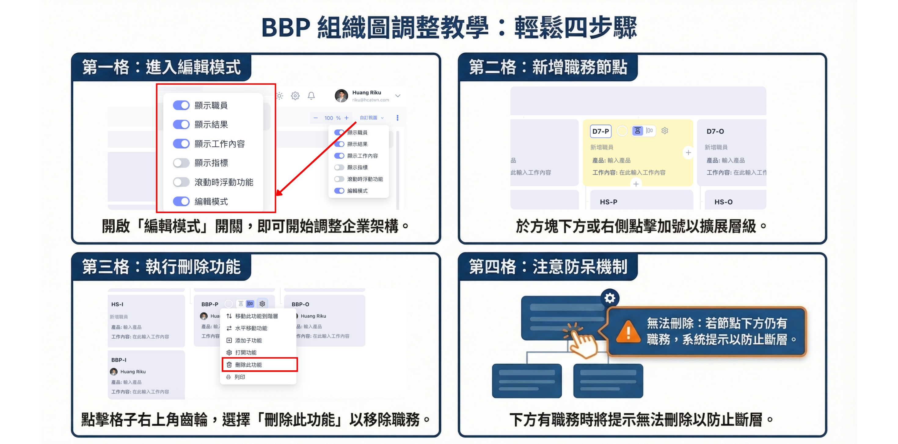

2.1 介面導覽：認識您的作業環境
系統介面分為三大核心區域，協助您快速定位功能：
2.2 組織圖模組：定義職務與責任
組織圖是 BBP 的靈魂，決定了資訊的流向。以下是功能總覽圖：

圖：組織圖模組功能地圖
2.3 如何新增與管理組織圖
點擊左側選單進入「組織圖」，透過以下四個步驟完成基礎設定：

1. 開啟建立功能

2. 輸入基本資訊

3. 選擇建立模式

4. 即時切換版本
2.4 編輯模式：調整職務節點
點擊右上角 [自訂視圖] ➔ 開啟 [編輯模式] 即可進行調整。
- 新增： 點擊職務格子旁的 [+] 號。
- 設定與刪除： 點擊 [⚙️] 圖示進行內容修改或職務移除。

圖：開啟編輯模式與功能細節